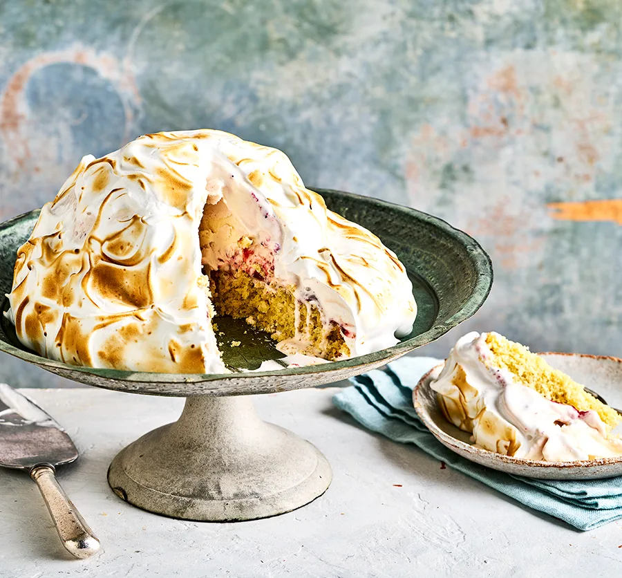

Baked Alaska

Description
Make this retro dessert for a festive get-together.
With ice cream, fluffy meringue and sponge cake, it's
a showstopper – and it's easier to make than it looks.
Ingredients
- 115g salted butter, softened, plus extra for the tin
- 115g caster sugar
- 1 tsp vanilla bean paste
- 2 large eggs
- 115g self-raising flour
- 1 lemon, zested
- 1-2 tbsp milk
For the topping:
- 3 large egg whites
- 175g caster sugar
- 1 tsp white wine vinegar
- 700ml raspberry ripple,
strawberry or vanilla ice cream
- 100g raspberry jam
Steps
- Heat the oven to 180C/160C fan/gas 4. Butter
and line a 20cm cake tin. Beat together the
butter and sugar using a hand whisk or
freestanding mixer, for 5 mins until pale and
fluffy. Beat in the vanilla and eggs, then fold
through the flour, lemon zest and milk. Spoon
the mixture into the tin, smooth over and bake
for 18-20 mins until golden and firm to the touch.
Leave to cool completely before starting the meringue.
- Whisk the egg whites to stiff peaks in a clean bowl, then
add the sugar 1 tbsp at a time while whisking continuously,
until you have a thick, glossy mixture that holds its shape
when the beaters are lifted away from the bowl. Quickly
beat in the vinegar.
- Remove the ice cream from the freezer 10 mins before you
assemble to soften slightly. Place the sponge on a serving
plate. Spread the jam over the top of the sponge in an even layer.
Scoop balls of the ice cream into a mound in the middle of the sponge,
leaving a 1-2cm gap of sponge around the edge. Gently smooth the
side and top of the ice cream with a palette knife. Spoon and swirl
the meringue around the outside of the ice cream and cake base with a
large spoon. Use a blow torch to evenly brown the outside of the meringue,
if you have one. Cut into wedges to serve.
Home